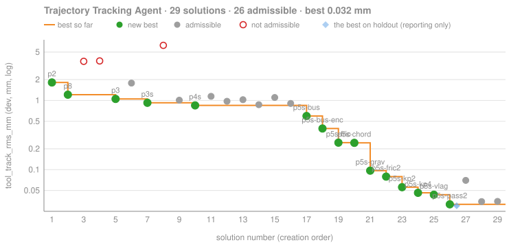

Trajectory Tracking Agent
Loading the population…
The trajectory and the robot are given; the agent searches over controllers. Everything below runs in your browser: MuJoCo 3.11 (its official WebAssembly build) and CPython (Pyodide) executing the real Python packages, the same code that scores the population.
How it's scored
The run above, scored by the ruler's own code (evaluate.run_task) in your browser.
Click a score to see how it was computed: the 3D view and the plot switch to what that number reads.
Run a solution to see its scores
Joints
The six joints of the same run, target against measured. Click a plot to move the arm there.
The black box
What goes in and what comes out is fixed by the ruler; a solution is only the code inside. The vocabulary is robot_msgs: every type name below links to its source.
Population
Every solution the agent tried, ranked by the ruler: admissible ones (every gate on every dev task) by tracking error, then the rest by gate pass rate. Click a row to run it above.
